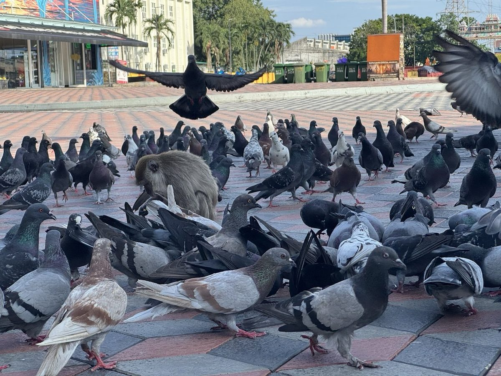

Как просто вычислить байесовскую вероятность: штуки
Штуки · Дерево · Тучи

TLDR: представь 1000 таких же случаев, раздели на «сбылось» и «нет» и посчитай, где было наблюдение.
Посчитаем штуки
Источники: Естественная частота против байесовского подхода · Сергей Багузин, Bayes' rule: high-speed intro · LessWrong
Простейший способ посчитать Байеса: разбить события по штукам. Возьмём любимый пример с Питером и дождём.
Вопрос: какова вероятность дождя сегодня, если на небе тучи?
В году 365 дней. Из них дождь идёт 200 дней, сухо 165.
При этом из 200 дождливых дней в 198 будут тучи, пару дней оставим на грибной дождь. Всего в Питере 30 солнечных дней, 28 из них при сухой погоде. Значит, сухих дней с тучами 165 − 28 = 137.
Как же часто тучи будут предвещать дождь? Тучи были 198 + 137 = 335 дней, и дождь шёл в 198 из них:
P(дождь | тучи) = 198198 + 137 ≈ 59%
Почти те же 60%, что вышли через круги. Ни одной формулы, только штуки.
Сравним с Кипром
Итого для Кипра тучи предвещают дождь с вероятностью 44 / (44 + 6) = 88%.
А если речь не про день, а про событие? Например, начальник написал «Зайди в кабинет. Надо поговорить», и ты ожидаешь увольнения.
Представь 1000 таких же сотрудников. Не 1000 вызовов, а именно сотрудников: начинать надо до наблюдения, иначе редкость увольнений потеряется. Дерево с теми же числами, что и в статье про спокойствие, ниже.
Примеры
Выбери пример. Красные листья сравниваем между собой: это и есть ответ.
Пошаговый алгоритм
- Представь много таких же случаев до наблюдения: 365 дней, 1000 сотрудников, миллион авиаперелётов. С миллионом, правда, уже неудобно, тогда смотри шансы.
- Раздели их на те, где гипотеза сбылась, и те, где нет: 200 дождливых и 165 сухих дней, 1 аварийный и 999 999 безопасных перелётов.
- В каждой части найди, сколько раз было наблюдение.
- «Гипотеза сбылась и наблюдение было» : «не сбылась, но наблюдение всё равно было» - это и есть искомый шанс. 198 : 137 - шансы, 198 из 335 - вероятность.
Выводы
Для простейшего вычисления формулы Байеса нарисуй дерево вариантов и посчитай пропорцию штук в подходящих веточках.
Если этот способ неудобен для твоего случая - событие очень редкое, улик несколько подряд или некогда считать, - читай продолжение про шансы.
Доп. материалы
- Как быстро вычислить байесовскую вероятность: шансы · продолжение этой статьи
- Как просто вывести формулу Байеса · две окружности и тучи над Питером
- Как перестать бояться теоремы Байеса · с калькулятором спокойствия
- Естественная частота против байесовского подхода · Сергей Багузин
- Bayes' rule: high-speed intro · LessWrong
Спасибо, что прочли!
Если нашли ошибку или хотите оставить комментарий, пишите мне в телеграм: t.me/art_oshk.